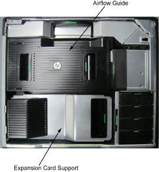

Operating Documentation
Direction 5193574-800, Rev# 22
LightSpeed 7.X Service Methods
Module Version 1.0, Version Date 10/15/13
Operating Documentation |
| Required Persons | Preliminary Reqs | Procedure | Finalization |
|---|---|---|---|
| 1 | Not Applicable | 30 mins | Not Applicable |
This procedure shall be followed when replacing the FDIP Card in the GOC6.6 VCT host computer (Z820).
| Last Revised: | October 10, 2013 |
| Item | Qty | Effectivity | Part# | Manufacturer | |
|---|---|---|---|---|---|
| Standard FE Toolkit | 1 | - | - | - | |
| Item | Qty | Effectivity | Part# | Manufacturer |
|---|---|---|---|---|
| Ty-Raps® (Cable Ties) | As Required | - | - | - |
| Item | Qty | Effectivity | Part# | Manufacturer | |
|---|---|---|---|---|---|
| FDIP Card | 1 | - | 5335963-3 | - | |
| ||||
TO PREVENT DAMAGE TO COMPONENTS WITHIN THE Z820, OBSERVE THE
FOLLOWING ESD PRECAUTIONS:
FOR FURTHER INFORMATION REGARDING ESD PROTECTION, REFER TO THE SAFETY CHAPTER IN THIS PUBLICATION | ||||
| Condition | Reference | Effectivity |
|---|---|---|
Only trained service personnel should service the GE Scanner. | - | - |
Open the Z820 computer side access panel.
Illustration 1: Z820 Side Access Panel Removal

Remove the Expansion Card Support.
Illustration 2: Z820 Airflow Guide and Expansion Card Support

Replace the existing FDIP card with new one.
Illustration 3: Z820 Component Location

Install the Expansion Card Support and close the Side Access Panel.
Fully slide the Z820 computer back into the console chassis, until mounting brackets are flush against the console chassis.
Remove and store the Service Platform.
Install and torque the four (4) 3mm socket cap screws that mount the Z820 computer in the GOC6.6 console.
| NOTE: | Torque each the for (4) 3mm socket cap mounting screws
to:
|
Reconnect all cables removed earlier to the Z820 computer.
Remove LOTO on console.
Install console covers and Keyboard Tabletop assembly. Refer to Replacement → Console (GOC6.6) → Console Cover Removal and Installation Procedure.
Perform the Functional Checks → System Scanning Test instructions from the procedure list.